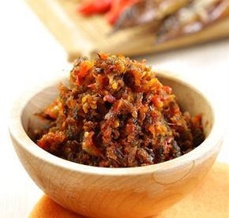
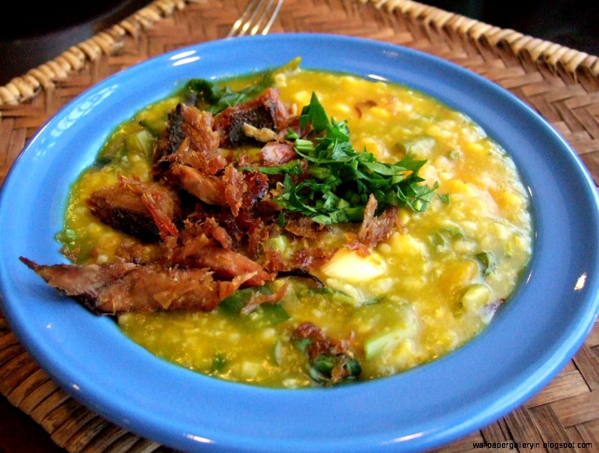
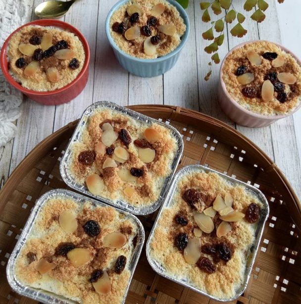
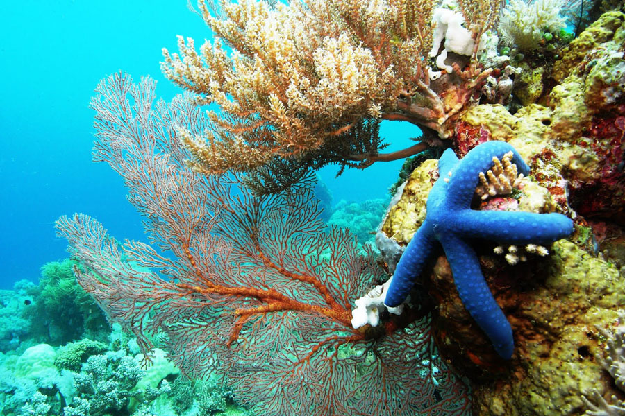

Kebudayaan
Kota Manado adalah kota yang memiliki sangat banyak kebudayaan yang unik. Berikut adalah beberapa contoh kebudayaan yang ada di kota Manado
Mapalus
Mapalus adalah bentuk gotong royong tradisional warisan nenek moyang orang Minahasa di Kota Manado yang merupakan suatu sistem prosedur, metode atau tehnik kerja sama untuk kepentingan bersama oleh masing-masing anggota secara bergiliran. Mapalus muncul atas dasar kesadaran akan adanya kebersamaan, keterbatasan akan kemampuannya baik cara berpikir, berkarya, dan lain sebagainya.

Pengucapan Syukur
Pada masa lalu pengucapan syukur diadakan untuk menyampaikan doa atau mantra yang memuji kebesaran dan kekuasaan para dewa atas berkat yang diberikan sambil menari dan menyanyikan lagu pujian dengan syair yang mengagungkan. Saat ini pengucapan syukur di Kota Manado dilaksanakan dalam bentuk ibadah di gereja. Pada hari H tersebut setiap rumah tangga menyiapkan makanan dan kue untuk dimakan oleh anggota rumah tangga, juga dipersiapkan bagi para tamu yang datang berkunjung.

Tari Kabasaran
Tari kabasaran sering juga disebut tari cakalele, adalah salah satu seni tari tradisional orang Minahasa yang banyak dimainkan oleh masyarakat Kota Manado, yang biasanya ditampilkan pada acara-acara tertentu seperti menyambut tamu dan pagelaran seni budaya. Tari ini menirukan perilaku dari para leluhur dan merupakan seni tari perang melawan musuh.
Musik Kolintang
Musik kolintang pada awalnya dibuat dari bahan yang disebut wunut dari jenis kayu yang disebut belar. Pada perkembangan selanjutnya, kolintang mulai menggunakan bahan kayu telor dan cempaka. Orkes kolintang sebagai produk seni musik tradisional bukan saja sebagai sarana hiburan, akan tetapi juga sebagai media penerapan pendidikan musik yang dimulai dari anak-anak sekolah di Kota Manado.
Makanan
Kota Manado terkenal dengan makanannya yang sangat beragam dan unik. Berikut beberapa makanan khas manado.
Dabu-dabu
Dabu-dabu adalah olahan sambal khas Manado yang terdiri dari irisan cabai yang dicampur dengan irisan tomat segar dan bahan lainnya yang menciptakan rasa pedas yang sangat menyegarkan.

Sambal Roa
Buat kamu pecinta pedas, Manado adalah surganya kuliner bercitarasa pedas. Selain Dabu-dabu, kamu bisa menikmati sambal khas Manado lainnya yang cukup terkenal ini; Sambal Roa. Sambal tradisional Manado ini terbuat dari daging ikan roa yang diasapkan, yang dicampurkan dengan cabe rawit dan rempah-rempah lain yang membuat olahan sambal ini sangat gurih. Sambal Roa ini juga biasanya jadi oleh-oleh khas dari Manado lho.
Tinutuan
Kamu pasti sudah pernah mendengar Tinutuan, bukan? Kuliner khas Manado yang satu ini juga populer dengan sebutan “bubur Manado”. Tinutuan atau bubur Manado ini terbuat dari sayur-sayuran yang dimasak bersama nasi yang telah dimasak menjadi bubur, biasanya juga ditambahkan jagung dengan buah labu kuning. Disajikan dengan sambal dan ikan asin.
Klappertart
Manado juga dikenal dengan dessert khasnya, yaitu Kappertart, yang berbahan dasar kelapa muda yang diolah bersama susu, keju, kacang kenari, dan juga kismis. Kalppertart memilki cita rasa manis dan tekstur yang sangat lembut, membuatnya banyak digemari orang.
Cakalang Fufu
Yang tak kalah menarik dan patut dicoba saat ke Manado adalah olahan ikan Cakalang Fufu yang diasapkan, memiliki rasa yang unik dan sangat lezat. Kamu wajib mencicipinya dan membawanya pulang sebagai oleh-oleh.

Wisata
Kota Manado merupakan salah satu kota di Indonesia yang memiliki potensi wisata sangat menarik. Kota kecil yang menjadi Ibukota Provinsi Sulawesi Utara ini menjadi persinggahan sementara sebelum menyeberang ke Taman Laut Bunaken. Taman yang menjadi surga bawah laut dengan pemandangan terumbu karang yang sangat mengagumkan sehingga ribuan wisatawan ingin mengunjungi surga ini. Tak hanya Bunaken yang menjadi tujuan wisata di Kota Manado.
Taman laut bunaken
Taman Laut Bunaken adalah tempat wisata terfavorit di Manado dan telah diakui keindahannya oleh dunia. Pemandangan bawah lautnya sangat mengagumkan. Jangan lewatkan untuk snorkling dan abadikan pemandangan yang menakjubkan ini dengan kamera Anda. Berbagai terumbu karang dan ikan cantik ada di dalamnya. Sangat cocok untuk Anda pecinta snorkling, diving, dan fotografi dalam air. Terdapat sekitar 39 titik selam yang akan membuat Anda semakin betah memandanginya.
Pantai Pal
Walaupun terbilang cukup baru, namun lokasi Pantai Pal ini sudah tertata dengan baik, ada beberapa fasilitas yang disediakan seperti rumah-rumah panggung untuk kegiatan ibadah, toilet dan lahan parkir yang memadai. Ketika memasuki pantai ini, Anda akan disambut dengan untaian pasir putih cantik yang memanjang sekitar 100 meter di bibir pantai. Ditambah lagi dengan udaranya yang sejuk karena rindangnya pepoponan yang tumbuh di sekitar pantai. air laut yang jernih sebening kristal pun menambah daya tarik tersendiri. Sapuan ombak dari tengah laut di bibir pantai tampak seperti gulungan kertas putih.
Hamparan pasir putih dan gulungan ombaknya yang menantang serta pemandangan laut lepas yang indah membuat pantai ini disebut Balinya Sulawesi Utara. Tidak puas menikmati pantai yang masih alami, Anda dapat memilih aktivitas yang memicu adrenalin. Cukup membayar Rp 25 ribu per orang, sensasi tantangan dengan Banana Boat Sport Air dan UFO Boat akan menjadi tantangan yang menarik. Namun disarankan hanya untuk pengunjung yang bisa berenang untuk mencoba kedua jenis olahraga air ini.
Untuk memasuki area pantai, Anda harus membayar Rp 10 ribu per mobil dan membayar Rp 5 ribu untuk motor. Di sini tersedia lokasi parkir yang luas. Juga terdapat gazebo yang bisa disewa, serta beberapa kios makan/minum. Untuk berbilas, warga setempat pun menyiapkan tempat khusus untuk berbilas. Dari Manado, pantai bisa ditempuh dengan perjalanan darat sekira dua jam. Menuju arah Likupang, kemudian berbelok ke kanan di tugu rusa menuju jalan Likupang Girian. Ketika sampai di pertigaan Desa Marinsow, terus saja sampai mendapatkan arah penunjuk jalan ke Pantai Pal.